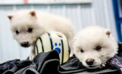

Cientistas dão vida a espécie extinta !
Na última semana a startup americana anunciou ter revivido lobos terríveis uma espécie que ficou popular por causa da série Game of Thrones mas que foi extinta da terra há mais de dez mil anos. O caso gerou o maior burburinho e deixou muita gente impressionada, mas o feito não é exatamente o que se diz. Um lobo branco magnífico, branco como a neve, estampa a capa da revista Time, acompanhado de uma manchete anunciando que a espécie "voltou" da extinção. O lobo-terrível (Aenocyon dirus) ficou mais famoso ao aparecer na série de ficção Game of Thrones, mas ela existiu de fato, há mais de 10 mil anos, quando vagou pelas Américas.

Continue...